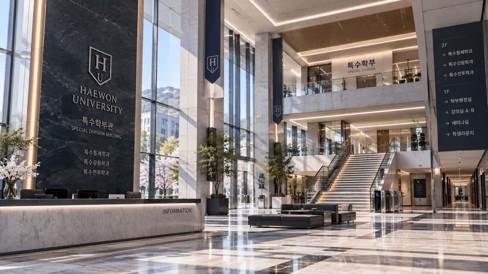
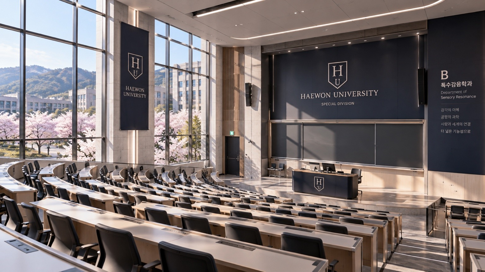
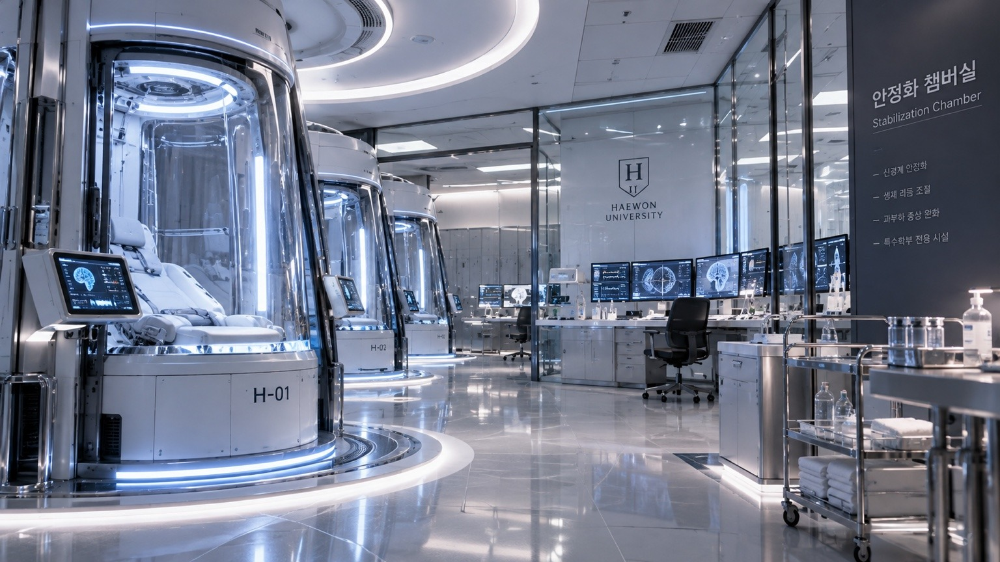
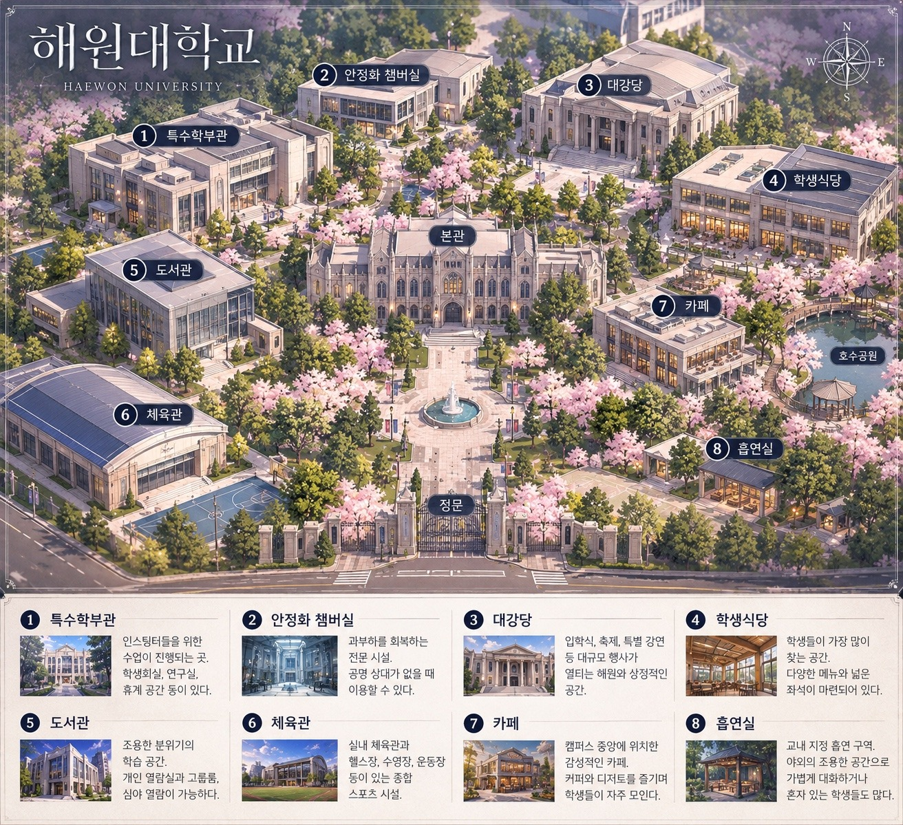

01 / CONTROL
특수통제학과
능력 제어, 신경계 통제, 과부하 예방과 위기 대응을 중점적으로 연구합니다.
서로 다른 재능이 만나 새로운 가능성이 되는 곳.
해원대학교에 오신 것을 환영합니다.
해원대학교 특수학부는 인스팅터의 능력과 안전, 공존을 연구하고 교육합니다.
인스팅터는 뛰어난 신체 능력과 감각, 특수 능력을 지닌 인간으로, 전체 인구의 약 10~15%를 차지합니다. 해원대학교는 인스팅터의 잠재력을 개발하는 동시에 과부하로부터 학생을 보호하는 교육 환경을 제공합니다.
능력 제어, 신경계 통제, 과부하 예방과 위기 대응을 중점적으로 연구합니다.
고도 감각, 신경 반응, 공명 적합성과 안정화 메커니즘을 탐구합니다.
신체 강화 능력과 현장 대응 훈련, 안전한 실전 운용을 교육합니다.

특수통제·특수감응·특수전투학과가 함께 사용하는 교육 공간입니다. 강의실, 실습 시설과 학생회실을 갖추고 있습니다.


일반인보다 뛰어난 능력을 지닌 인간. 능력과 안정성 등에 따라 A·S·SS급으로 분류됩니다.
적합한 상대와의 동의에 따른 신체 접촉으로 인스팅터의 신경계를 안정시키는 현상. 공명 자체가 사랑이나 각인을 뜻하지는 않습니다.
능력 사용에 따른 신경계 불안정 상태. 안정·경미·주의·위험의 4단계로 구분하며 전용 워치로 상태를 확인할 수 있습니다.
인스팅터의 과부하 회복을 돕는 특수 시설. 공명 상대가 없거나 접촉이 어려울 때 이용할 수 있습니다.
학생의 목소리에 귀 기울이고, 안전하고 활기찬 캠퍼스를 만들어갑니다. 인물 카드를 선택해 상세 프로필을 확인해 보세요.
과부하 위험 상황에서는 무리한 능력 사용을 중단하고 안전 담당자 또는 안정화 시설의 도움을 받으세요.
주요 시설을 선택하면 위치와 이용 목적을 확인할 수 있습니다. 아래 약도는 실제 지형도가 아닌 작품 설정용 개념도입니다.

※ 작품 속 가상의 캠퍼스 안내도입니다. 아래 시설을 누르면 자세한 사진과 설명을 볼 수 있습니다.
이름과 학과를 입력해 작품 속 가상 학생증을 만들어 보세요. 입력 내용은 서버에 저장하거나 전송하지 않습니다.